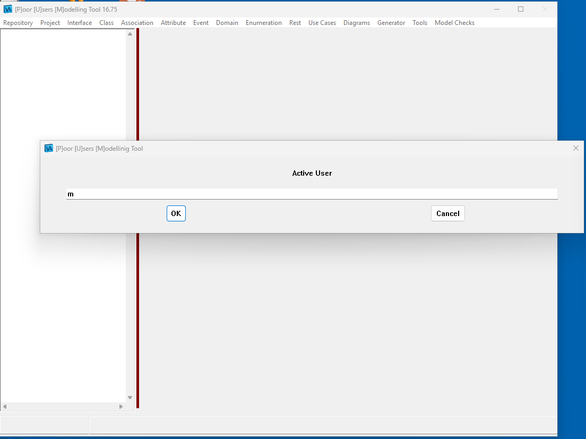
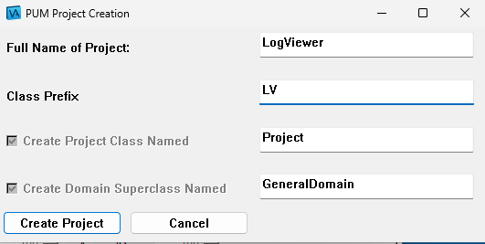
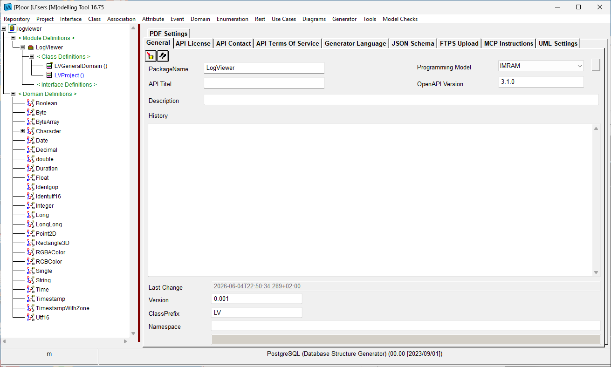
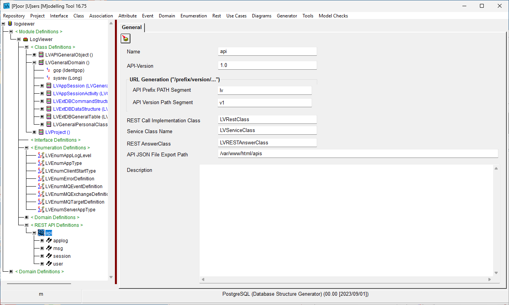

|
<< Click to Display Table of Contents >> Navigation: PASLOG-Viewer - Anwendungsbeispiel > Ein Modell muß her ... |
So, der Mainstream holt sich einen Editor und tippt den Code ein oder wirft eine KI an und hofft dann, Teile davon nutzbar zu machen - Programmieren auf Sicht, weil der Nebel der Anwendung zu dicht ist.
Leider scheint Nachdenken bei der Entwicklung immer mehr aus der Mode zu kommen - seit 1997 nutzen wir Tools zur Modellierung von Daten. Codegeneratoren zum Erzeugen eines Basis-Code Gerüsts.
Also werfe ich PUM an und baue mir damit eine Datenstruktur für die Anwendung mitsamt einer API. Das Beispielprogramm ist dabei natürlich genügsam. Die Daten liegen in PostgreSQL und daher brauche ich nur Datenstrukturen, um die Verwaltungsstrukturen für ein Programm hinzuzufügen: Benutzer, Sessions, Paßwortmanagement und einfache Klassen, die die eine Tabelle (ist halt eine einfache Struktur) mappt.
Also starte ich PUM ...

und geben meinen Namenskürzel ein (z.B. "mf") - der Name ist egal. Es gibt auch keine Aktionen, die mit einem Namen verbunden sind. Man sollte aber am besten immer den gleichen Namen für sich benutzen. Danach erfolgt ein Dialog, um ein bestehendes Modell zu laden. Das können wir abbrechen, denn wir möchten ein neues Model erstellen und gebe im nächsten Dialog den Namen des neuen Repositories an: "logviewer".
Es kommt ein Dialog, in dem wir das Projekt definieren: "LogViewer" nennen wir das Projekt.

Wir haben nun das Projekt "LogViewer" im Repository "logviewer". Auch wenn man mehrere Projekte in einem Repository haben könnte - in der Praxis mache ich das nicht. Der Dialog übrigens fragt auch den Prefix für Klassen in diesem Projekt ab und den Namen zweier Anwendungssystemklassen, von denen alles abhängen wird. Von "GeneralDomain" werden alle Klassen abgeleitet, die Projektklasse ist die Root der Persistenz für dieses Projekt.
Dann erscheint das spärliche Anfangsmodell in PUM:

Wir ändern das Programming Model von INRAM nach "HTTP-RPC" (Sichern nicht vergessen).
Nun fügen wir Elemente hinzu, die nahezu jedes Programm benötigt. Über "Projekt->Installable Structures->Install Base Stack Model" erweitern wir das selektierte Projekt:

Wir haben nun die folgenden Elemente hinzugefügt:
•Benutzer (Assoziation von Projekt nach User), Attribute für Login, Paßwort und Name des Benutzers
•Session (Assoziation von Projekt nach Session, Assoziation von Session nach User) mit SessionActivity (Wann), Session Timeout
•CRUD-API Definitionen, um diese Assoziationen bearbeiten zu können
•Eine Klassen zur Unterstüzung von Tabellen in SQL (die wir in diesem Fall nicht brauchen)
•Weitere API's Calls: Login, Logout, Noop (Signalisiert Aktivität)
und eine Klasse in der API-Struktur: LVAPIPayloadLog, die zum Versenden von LOGS via RabbitMQ dienen kann oder zur direkten Speicherung in PostgreSQL genutzt werden kann, denn die SQL-Attribute sind bereits bei der Klasse definiert.